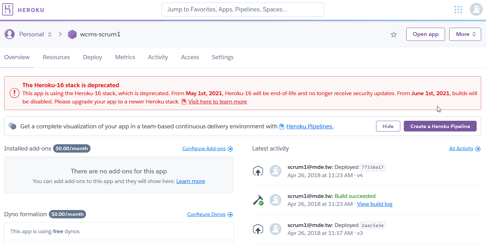

W9 <<
Previous Next >> Proxy Server
W10
網際內容管理系統下半學期將有以下幾個主要教學目標:
- 對 Python Flask 網際程式的架構能夠更加深入了解, 各學員不僅會利用 Beautifulsoup 從學校教務主機擷取資料, 建立 Heroku 雲端應用程式, 列出各實驗室的排課資訊外, 能計算各實驗室的排課總時數, 同時也能將查得的資料分別存入 SQLite 與 PostgreSQL 資料庫 (flaskg 範例倉儲與網站).
- 要求學員有能力自行編寫如網際猜拳, 網際英英字典 (http://lookupdict.herokuapp.com, 採 scrum1 At mde 部署), 以及其他與機械設計較相關的網際程式 (包括猜數字遊戲, 正齒輪齒面寬設計, 2D 繪圖等).
- 利用 RoboDK 作為整合英文, 數學與網際內容管理相關技術的測試工具, 希望能夠透過網際程式控制特定的六軸機械手臂 (參考, Guide).
- 編寫能夠協助 CMSiMDE 分頁錯誤時進行 debug 的輔助程式 (擬採用 https://github.com/PySimpleGUI/PySimpleGUI or https://github.com/dddomodossola/remi 進行測試), 假如要讓 CMSiMDE 能夠透過中文斷字 (https://github.com/fxsjy/jieba), 試著解讀網際內容管理的關鍵字, 進而了解網站的內容屬性.
根據下圖所示, 四年前所部署的 https://wcms-scrum1.herokuapp.com/ 所使用的 The Heroku-16 stack is deprecated, 意即 Heroku-16 stack 將要在 2021.06.01 終止 build 功能, 因此部署在此雲端硬體平台的應用程式, 若要持續改版, 必須要在生命週期結束之前搬遷到其他硬體平台上:

SQLite 練習
目的希望能將之前所寫的各實驗室排課表網際程式, 能將所查詢的資料存入 SQLite, 並且部署到 Heroku.
之後再將資料庫應用至 PostgreSQL, 最後再將網際資料庫程式部署到 Heroku.
若該網際程式配置 Oauth2 的登入套件, 即可延伸應用至各實驗室上課時段外的實驗室借用管理系統. 若再利用雲端點名系統 RFID 掃描的感應開門, 將可擴大此系統的應用範圍.
W9 <<
Previous Next >> Proxy Server